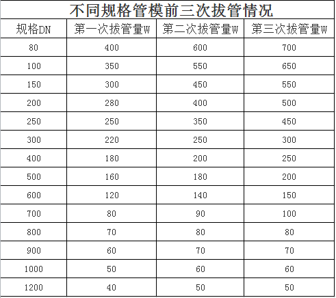

03-21 16:04
管模是离心球墨铸铁管所需的重要设备之一，目前管模耗材成本，一般占球墨铸铁管制造成本的3-5%。了解管模使用，认识维护和保养的重要性，达到规范使用，降低球墨管分摊管模的成本。今天我们就来共同探讨下管模的使用寿命和拔管效率。
01 影响管模使用寿命的因素
管模毛坯的选择、管模的热处理和管模使用以及维护都是影响管模使用寿命的最重要的因素。
❶ 管模的毛坯选择我们建议选用材料21CrMo10，因为21CrMo10材料的化学性能以及力学性能，更加符合管模的设计要求，21CrMo10材料冲击韧性，以及材料中铬元素可以增加管模的淬透性以及管模的耐磨性，而且21CrMo10材料中的碳元素可以保障管模的硬度，强度，以及表面质量和制造精度更加稳定；它的力学性可以提高管模的可塑性以及它的屈服点，从而可以增加管模的应力和拔管效率，延长管模的使用寿命。
❷ 管模毛坯的退火、调质及应力处理等，其目的在于消除管模残余的组织缺陷、应力等，形成有利于热处理及淬火的良好条件。热处理的温度、时间、以及冷却工艺的正确与否，都对管模失效及寿命有影响。在管模淬火时，由于加热温度较高，稍有不慎，就发现晶粒粗大，氧化脱碳、强度、钢性不佳等。淬火中的快速冷却会形成应力隐患，导致模具在服役中早期失效。而且在淬火中，因为温度不均匀、保护不良、严重氧化或冷却介质中的污染等，会造成硬度不均，而使管模强度受损，在管模的使用中将出现塌角、变形、掉块等弊病。而回火在于消除应力，获得合理的硬度，均匀而正确的金相组织，回火温度和所获硬度对寿命有巨大的影响。
❸ 要提高管模的使用寿命,首先要制订合理的使用制度和做好日常生产维护工作,如:新投入使用的管模在最初三次使用时,要严格控制浇注管数,随后每个管模的生产班次不宜过多,一般限于每日2班16 h为宜。
合理确定管模每次生产量,一个状况较好的管模不宜无限制地浇注一种内径尺寸的管件。要严格限定管模的每次铸管数量,目的是确保管模有很小裂纹时及时换下修理,避免裂纹进一步扩大。
02 各规模管模的拔管量

★冷模前三次使用必须控制拔管数量，目的在于考量管模适应温度、应力释放、微裂纹修复，以提高管模使用寿命。正常使用前三次后根据管模质量情况逐渐提高拔管数量达到通常使用量，合理控制每次拔管数量是提高管模使用寿命的重要手段。
★拔管过程应加强温度的控制，尤其是承插口温度均匀性控制，终冷温度过低会导致管模工作温差过大，将增加管模早期产生疲劳裂纹的概率；建议浇注成型后在满足工艺要求的前提下应尽快拔出铸管，以降低管模的热储存量以及内外温差，减少冷热交变应力，提高管模的使用寿命。
★出管时，定期使用红外测温仪检测铸管中部与两端的温差，推荐温差W200℃，尽量使拔出铸管的温度均匀一致。
管模管效率跟它的硬度，以及热处理都有很大的关系。所以管模的材料我们建议选用21CrMo10，因为21CrMo10材料的化学性能以及力学性能，更加符合管模的设计要求，提高管模的拔管效率；管模的热处理可以去除相应的应力，提高管模的机械性能和管模的拔管效率。